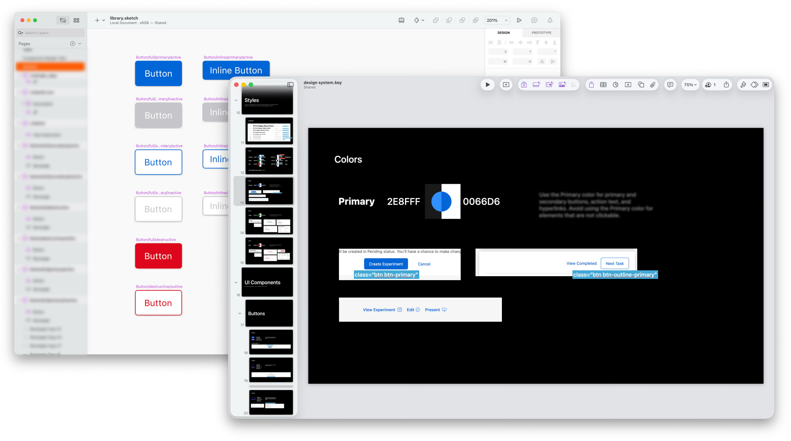
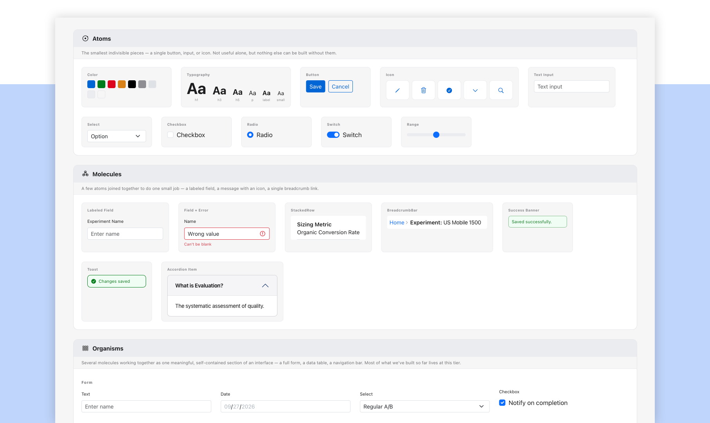
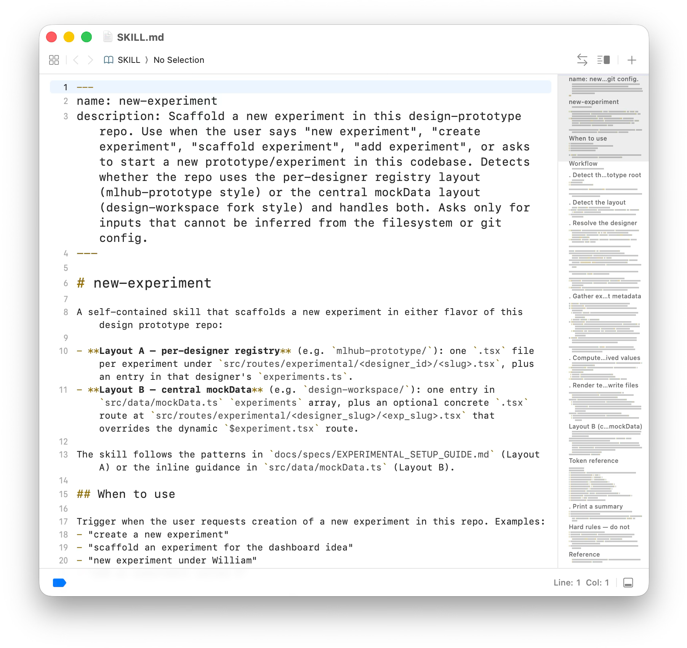
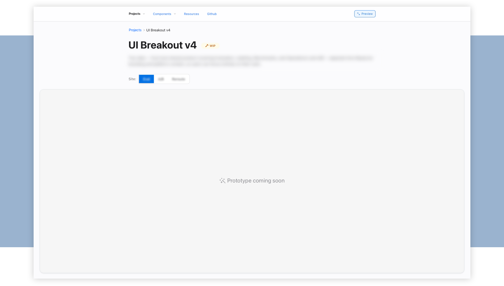

Static mocks and fragmented code components are prone to inefficiency and inconsistency.
A new AI-led workflow with a codified component library, a set of AI skills, and a live prototyping sandbox that empowers the team to go from idea to execution.
My RoleLead Designer
AudienceInternal engineering team
ToolsAI, Markdown, GitHub
I joined as the team's first designer. I started by designing individual pages/workflows and tracking recurring patterns in a shared component library. As the patterns added up, I compiled them into a component library and usage guidelines, which I shared with engineering as a work-in-progress deck.
That handoff loop quickly showed its limits. Complex, state-heavy internal tools can't be fully validated through static comps alone. Our engineers codified the patterns from basic elements (i,e. color) up through more complex workflows (i.e. multi-step forms), and we used a shared feedback channel to make steady, incremental progress. But every new state still meant a new round of static screens and a conversation to keep design and code in sync.

I started exploring how AI-assisted tools could change our workflow, and used it to move our entire library and process into a new workspace. It's built on three pillars: 1) a component library, 2) AI skills & prompt templates, and 3) a prototyping workspace with a review loop. Together they replace manual screen production with a working prototype from the start.
I ported our existing components and set up the new library using atomic design principles, giving designers and engineers the building blocks to effectively scale for complexity.

A set of structured prompts and AI skills connect our design tokens directly to working code. These skills include:

The workspace has a global navigation structure (a prototype hub, feature pages, a component library, and shared resources) so every experiment has a home. Designers get their own sandbox to build mockups, test interactions, and push changes to Git. Deployed previews let engineers, PMs, and researchers click through live prototypes without setting up a local dev environment.

As a designer, this process meant building faster and more consistently. For my engineering teammates who'd worked in both the old and new formats, the clearest feedback was that navigating the workspace made it easier to browse and build from our library, including having a centralized place for completed designs.
| Before: Traditional Workflow | After: AI-Assisted Workflow | |
|---|---|---|
| Time to Live | 1 to 2 weeks | 2 days |
| Interactive Fidelity | Click-through vectors, simulated data states | Stateful DOM, scroll behavior, mock data |
| System Adoption | Fragmented, one-off UI; engineers rebuilding common patterns from scratch | Standardized component catalog speeds up front-end dev while unifying pages and multi-tool suites |
| Handoff Friction | Ambiguous responsive behavior & edge cases | Functional code references ready for prod adaptation |